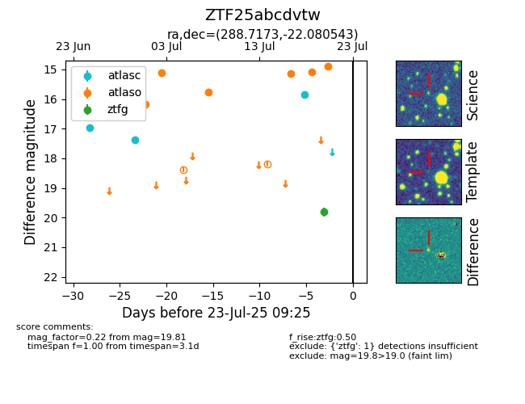

Target ZTF25abcdvtw at 2025-07-23 12:37, see:
FINK: fink-portal.org/ZTF25abcdvtw
Lasair: lasair-ztf.lsst.ac.uk/objects/ZTF25abcdvtw
ALeRCE: alerce.online/object/ZTF25abcdvtw
alt names
ZTF25abcdvtw (ztf,fink)
coordinates:
equatorial (ra, dec) = (288.7173,-22.08054)
galactic (l, b) = (15.3877,-14.80791)
photometry
last atlasc=15.85, atlaso=14.90, ztfg=19.81
4 atlasc, 9 atlaso, 1 ztfg detections
